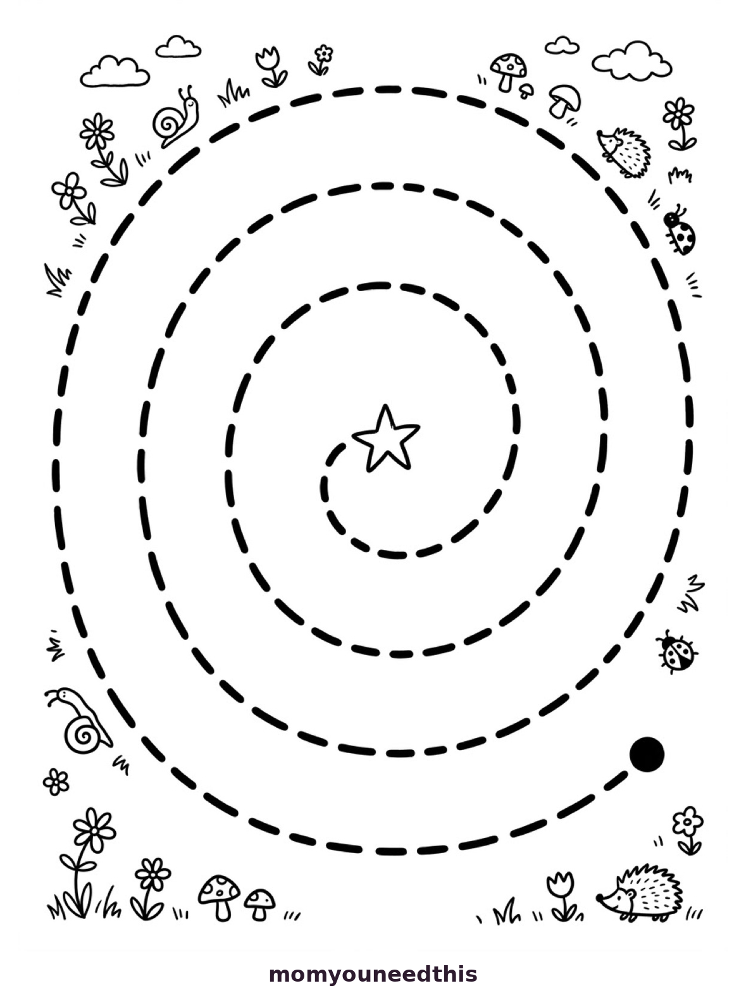
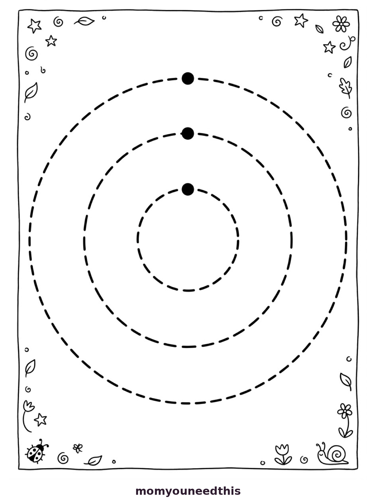
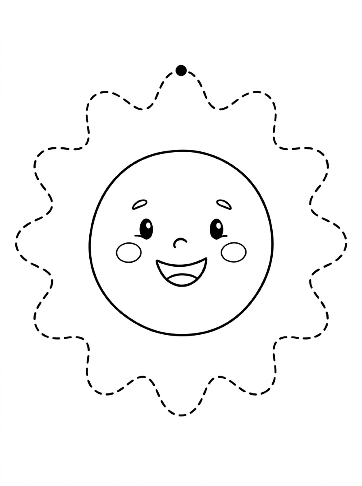
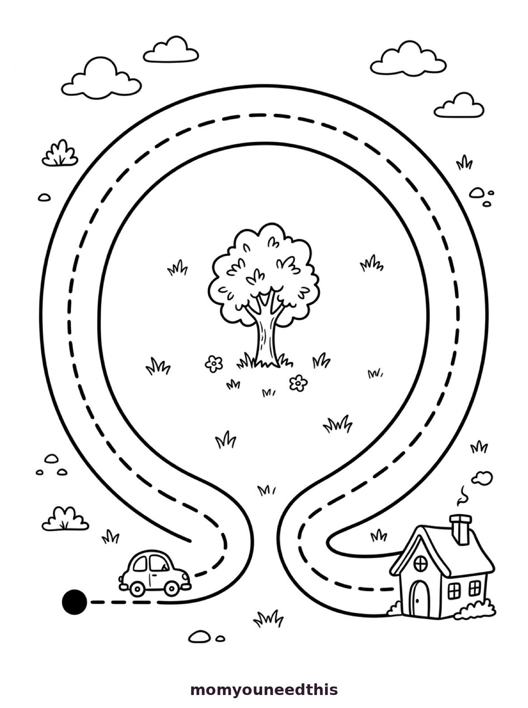
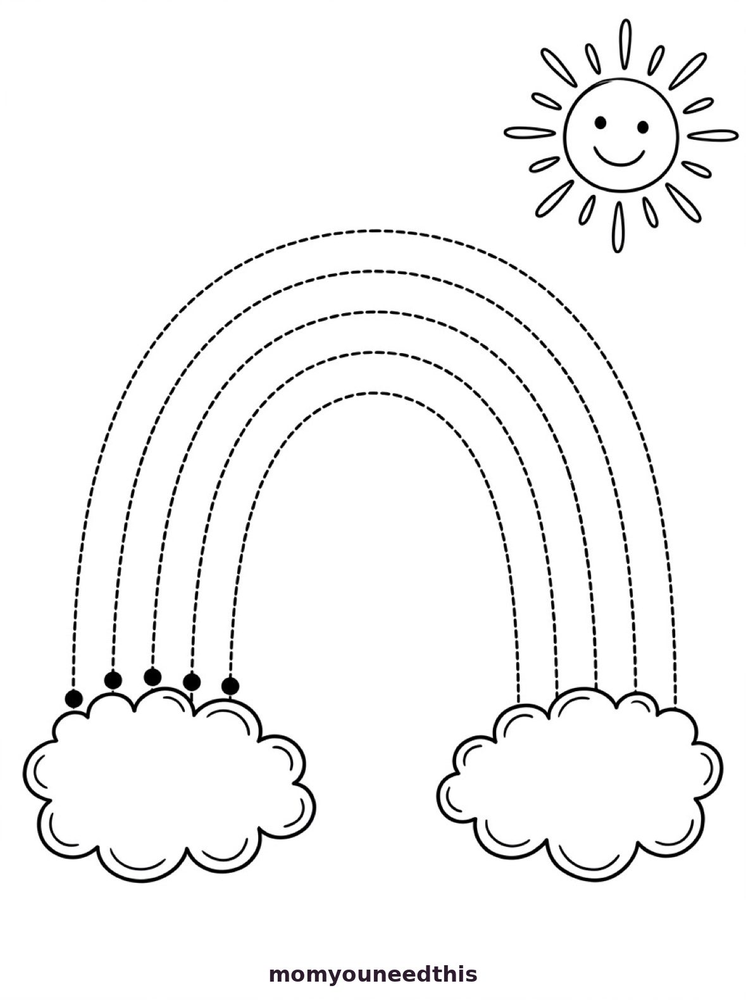

Circle Path Tracing For Kids Follow Round And Round Paths
Quick Answer
This free printable helps toddlers and preschoolers practice tracing circular paths without lifting their pencil. The worksheet includes round tracks in playful themes with clear start points. Download and print at home with no signup needed — perfect for building the continuous round motion used in letters like O and C.
Help your child master circle paths with printable tracing worksheets that build smooth, round-and-round pencil control. It all comes down to tracing around — following a round path all the way around and back to the start, without lifting the crayon. Below you will find the original circle path sheet plus five new designs to trace around: three rings, a smiling sun, a spiral, rainbow arcs, and a little car driving around a roundabout.
⭕ What Are Circle Paths?
Children follow paths shaped like circles — round and round, back to where they started. Circle paths teach the hand to keep moving in a smooth curve, the same motion used to write O, C, and G. That is what makes circle tracing such a valuable pre-writing step: a circle never gives the hand a corner to stop and rest on, so children learn to plan one whole, flowing stroke from start to finish.
🖨️ Download Your Free Path Tracing Printable
Start at the green dot and trace all the way around the circle path until you reach the finish flag. Try not to lift your crayon! Print it out, grab the crayons, and you're ready — no signup needed.
⬇️ Open Free Printable 🖨️ Print🎁 Free printable for toddlers & preschoolers
🌀 Spiral Path Tracing

Follow the dashed spiral from the black start dot, curling around and around until you land on the star in the middle. Snails, flowers, and mushrooms around the edge are waiting to be colored when the tracing is done.
⬇️ Download the Spiral Tracing Sheet 🖨️ Print the Spiral Sheet🎁 Free printable for toddlers & preschoolers
⭕ Trace Around the Rings

Three dashed rings, one inside the next, each with its own start dot at the top. Trace around the biggest ring first, then the middle one, then the smallest — the gentlest first step into circle tracing.
⬇️ Download the Trace-Around-the-Rings Sheet 🖨️ Print the Rings Sheet🎁 Free printable for toddlers & preschoolers
☀️ Trace Around the Sun

Trace around the sun's wavy edge, riding up and down over every bump until you arrive back at the start dot on top. The smiling sun face in the middle is ready to color as soon as the tracing is done.
⬇️ Download the Sun Tracing Sheet 🖨️ Print the Sun Sheet🎁 Free printable for toddlers & preschoolers
🚗 Roundabout Car Path Tracing

Put your crayon on the start dot, hop into the car, and follow the dashed road all the way around the tree in the middle until you reach the little house. A story-driven circle path made for kids who love anything with wheels.
⬇️ Download the Roundabout Car Sheet 🖨️ Print the Roundabout Sheet🎁 Free printable for toddlers & preschoolers
🌈 Rainbow Arc Tracing

Five dashed arcs sweep from the little dots on the left-hand cloud, up and over to the cloud on the right. Trace around each band, then color the rainbow in — one color for every arc you traced.
⬇️ Download the Rainbow Tracing Sheet 🖨️ Print the Rainbow Sheet🎁 Free printable for toddlers & preschoolers
🎡 Round-And-Round Game
Spin around like a merry-go-round, then draw giant circles in the air. Try the printable next — can your child trace the whole circle path in one smooth ride?
💡 Why Practice Path Tracing?
Circle paths build endurance for continuous strokes. Children who can follow a full circle without stopping are developing the fluency that makes writing round letters feel natural instead of choppy.
🖐️ How Tracing Around Works: Dot to Finish
Every sheet on this page works the same simple way. Find the black start dot and put a fingertip on it first — tracing around with a finger warms up the hand and lets your child learn the path before any marks are made. Then swap the finger for a chunky crayon and follow the dashes slowly, all the way around, trying not to lift off the page. Wobbles are fine and expected; staying roughly on the path matters far more than a perfect line. And when your child reaches the end, make it a moment — a sticker, a high five, a happy dance. That little celebration is what brings them back for another round, and the repetition is where real pencil control grows.
👶 Simple Tips for Toddlers and Preschoolers
Toddlers (18 months to 3 years) do best with the widest paths and the shortest sessions. Let them trace around with a finger or a thick crayon, expect plenty of wandering off the path, and stop while it is still fun — two or three minutes is plenty. Preschoolers (3 to 5 years) are ready for more: a real pencil, slower and steadier dashes, and playful challenges like "can you stay on the path the whole way around?" or printing the same sheet twice to beat their first try. If a sheet starts to feel too easy, that is your sign to move up the progression below — not to add pressure.
📈 Which Sheet First? An Easy Progression
Start with Trace Around the Rings — three plain circles with nothing to distract from the round motion itself. Move on to Trace Around the Sun, where the wavy edge adds gentle up-and-down changes along the way. The Spiral Path comes next: one long, unbroken line that builds real tracing stamina. Rainbow Arc Tracing follows, asking for big, sweeping arm movements across the page. Save the Roundabout Car for last. Its road bends away from a plain circle, so it asks for the most control — and the little story of driving the car home keeps kids motivated all the way to the house.
🎨 All Traced? Now Color It In
The tracing is only half the fun. Every sheet on this page doubles as a coloring page once the path is complete: color the sun's smiling face, fill each rainbow band with a different color, decorate the garden doodles around the spiral, or give the roundabout car a bright new paint job. Coloring after tracing stretches one printable into two activities, and it gives small hands a relaxed way to practice staying inside the lines after the focused work of staying on a path. Hang the finished sheets on the fridge — seeing their own progress is a powerful reason to come back for another round of circle tracing.
❓ Path Tracing FAQs
What is circle path tracing?
Circle path tracing means following a round track from start to finish without lifting the pencil. It builds smooth circular motion and stamina, preparing children for round letters like O, C, and G.
What does tracing around mean?
Tracing around means following a round dashed path all the way around a shape and back to where you started, without lifting your pencil. It is the heart of circle tracing, and the same round motion children need for letters like O, C, and G.
Are these path tracing worksheets really free?
Yes — every printable on MomYouNeedThis is 100% free to download and print. No signup, no payment, just tap the download button.
How do I use these path tracing worksheets with my child?
Print the worksheet and let your child trace each path slowly, following from start to finish without going off the track. Begin with a finger, then try a crayon, and celebrate reaching the end of every path!
📚 Keep Exploring
- 🎁 Back to Path Tracing Free printable curve path tracing pages for toddlers.
- 🌀 Loop Paths Free printable loop path tracing worksheet for toddlers.
- 🌊 Wave Paths Free printable wave path tracing worksheet for toddlers.
- 🚗 Road Paths Free printable road path tracing worksheet for toddlers.
- 🐻 Animal Paths Free printable animal path tracing worksheet for toddlers.
- 🧩 Simple Mazes Free printable easy mazes for kids.
- ✏️ Mixed Paths Free printable mixed path tracing worksheet for toddlers.